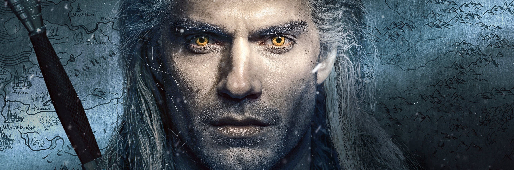

hola
Geralt de Rivia es un brujo, mutado durante su infancia para ser más efectivo en su labor, matar monstruos por dinero. El continente se encuentra en un estado de caos debido a las ansias del Imperio de Nilfgaard por ampliar su territorio. Entre los refugiados de esta lucha se encuentra la princesa Cirilla de Cintra, conocida como Ciri, que es constantemente perseguida por Nilfgaard debido al secreto poder que posee. Debido al destino, Geralt y Ciri están unidos para siempre desde antes del nacimiento de esta. Durante sus viajes Geralt conoce a Jaskier, un trovador demasiado hablador, y a Yennefer de Vengerberg, una poderosa hechicera.
Episodios: 8
Emisión: 20 de diciembre de 2019
Episodios: 8
Emisión: 17 de diciembre de 2021